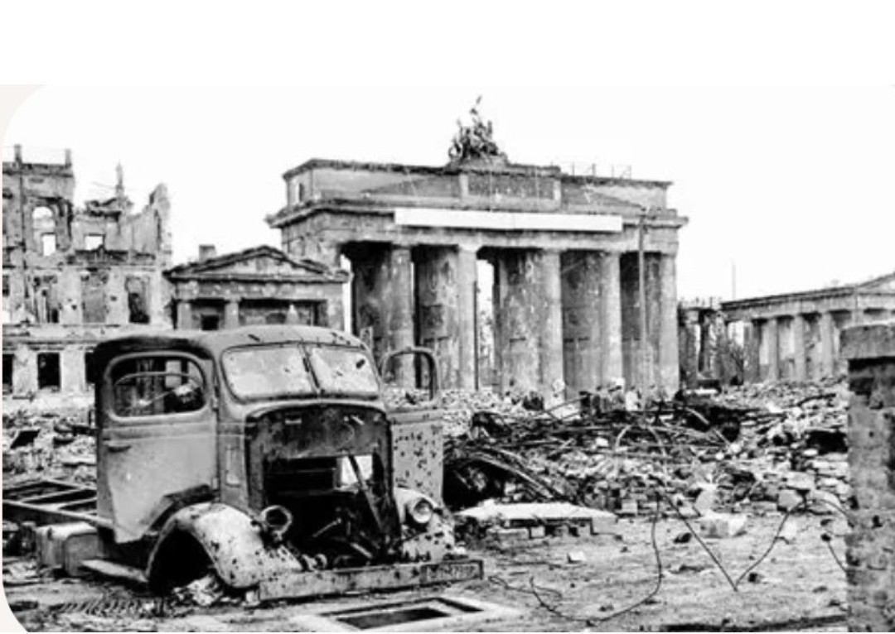

Du régime nazi à la chute du Reich

Entre 1933 et 1945, l’Allemagne est dirigée par le régime nazi, une dictature fondée sur une idéologie raciste, antisémite et expansionniste. Cette période voit la destruction de la démocratie, la mise en place d’un État totalitaire et le déclenchement de la Seconde Guerre mondiale.
En janvier 1933, Adolf Hitler est nommé chancelier. Rapidement, le régime nazi démantèle les institutions démocratiques : interdiction des partis politiques, contrôle de la presse, arrestations d’opposants et mise en place d’un système de terreur.
L’incendie du Reichstag et les lois d’exception permettent au régime de suspendre les libertés fondamentales et de concentrer le pouvoir entre les mains du parti nazi.
Le régime nazi contrôle tous les aspects de la société : l’État, la police, la justice, l’école, la culture et les médias. La propagande joue un rôle central pour diffuser l’idéologie et construire le culte du chef.
Les organisations comme la Gestapo, les SS et la police politique surveillent la population, répriment toute opposition et organisent la persécution des groupes considérés comme « ennemis » du régime.
Dès 1933, les Juifs, les opposants politiques, les personnes considérées comme « indésirables » sont progressivement exclus de la vie publique. Les lois de Nuremberg (1935) retirent aux Juifs leurs droits civiques et organisent leur ségrégation.
La persécution s’intensifie avec les violences, les déportations et la mise en place d’un système concentrationnaire. Cette politique conduit, durant la guerre, à l’extermination de millions de personnes.
La politique extérieure du régime nazi est fondée sur l’expansion territoriale et la remise en cause des frontières établies après 1918. L’annexion de l’Autriche, le démantèlement de la Tchécoslovaquie puis l’invasion de la Pologne en 1939 déclenchent la Seconde Guerre mondiale.
L’Allemagne mène une guerre totale en Europe, marquée par des occupations brutales, des destructions massives et des crimes de guerre. À partir de 1943, le rapport de force s’inverse et le régime recule face aux Alliés.
En 1945, l’Allemagne est envahie par les armées alliées. Les grandes villes sont détruites, le régime s’effondre et Berlin tombe en avril‑mai 1945. La capitulation allemande est signée le 8 mai 1945.
La découverte des camps de concentration et d’extermination révèle l’ampleur des crimes commis. Après la guerre, les principaux responsables sont jugés lors du procès de Nuremberg.
La période 1933–1945 en Allemagne est étudiée comme l’exemple d’un régime totalitaire fondé sur la violence, la propagande et la destruction des libertés. Elle rappelle les dangers des idéologies extrémistes et l’importance de la défense des droits humains.